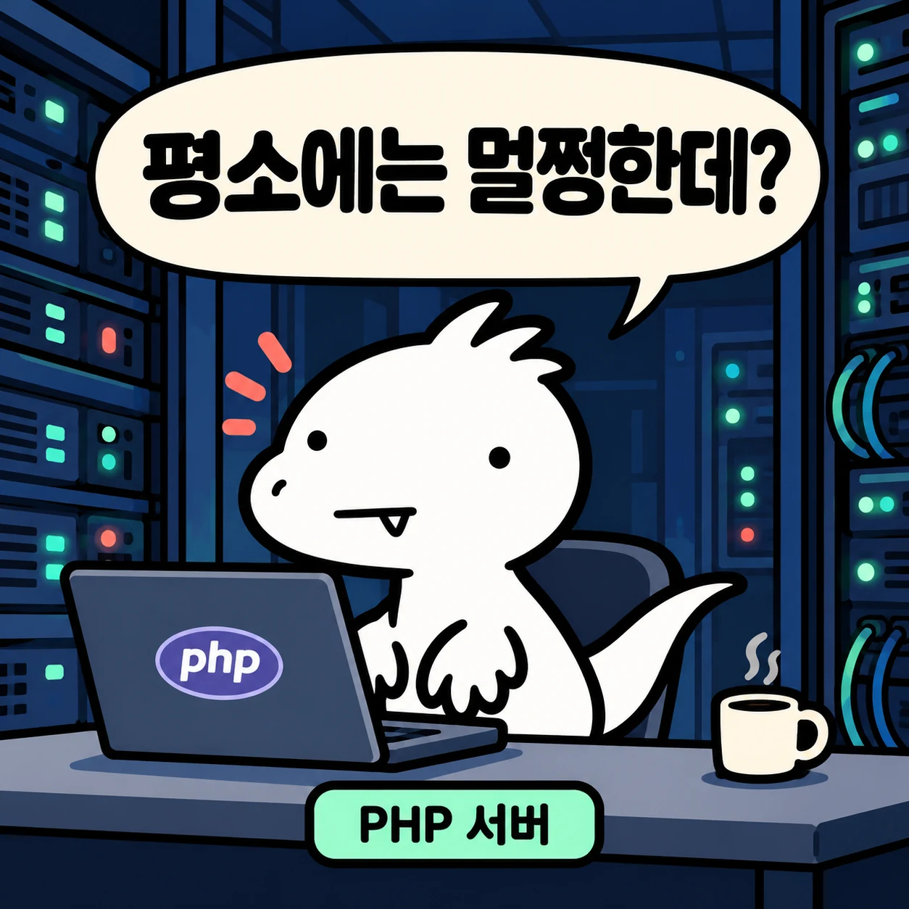
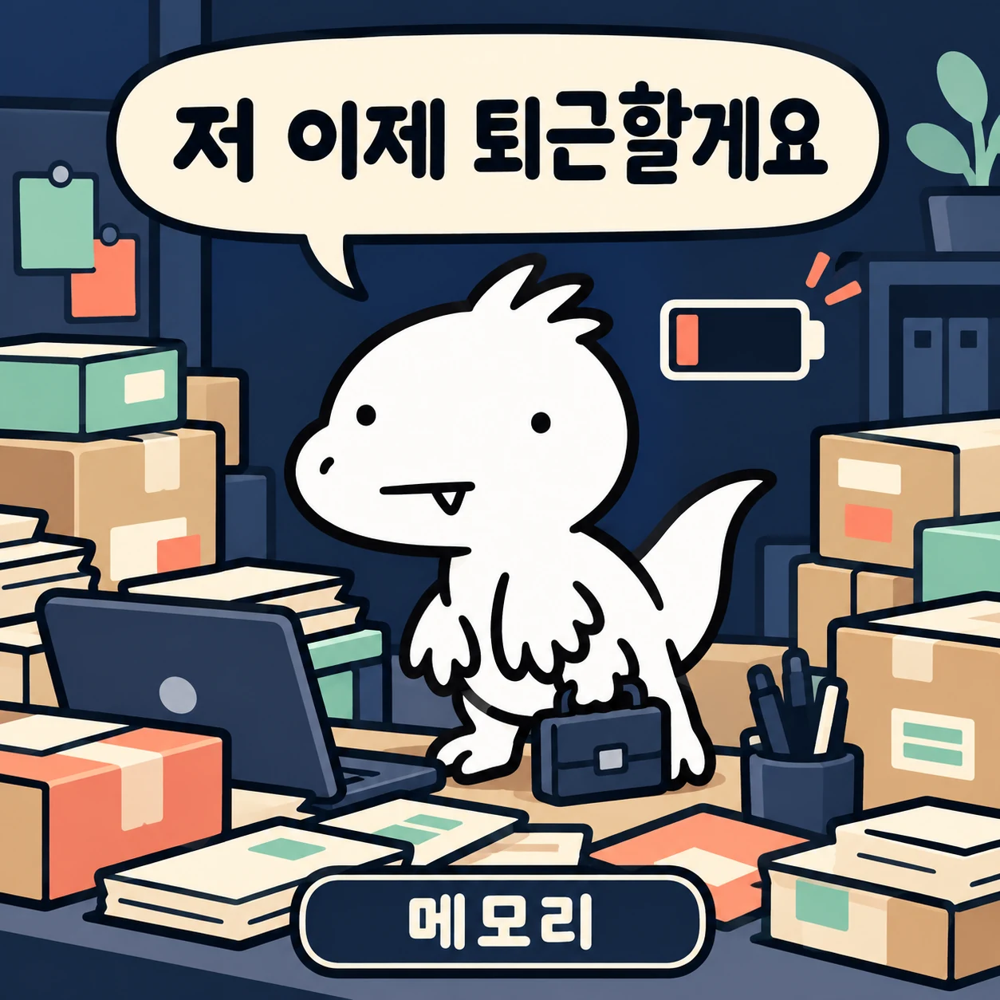
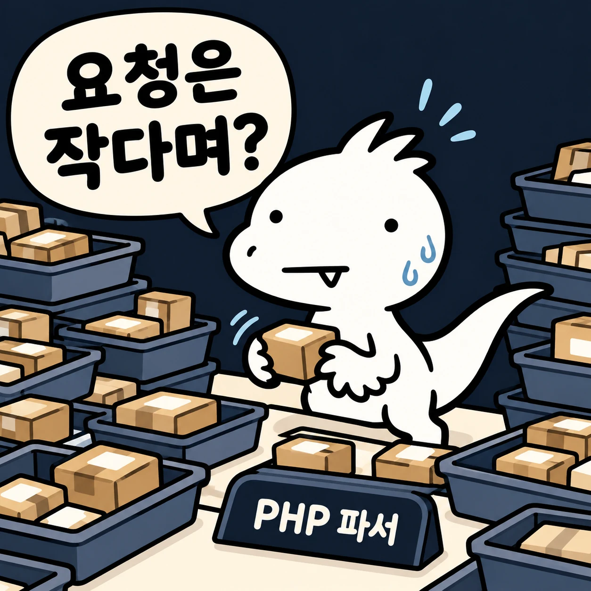
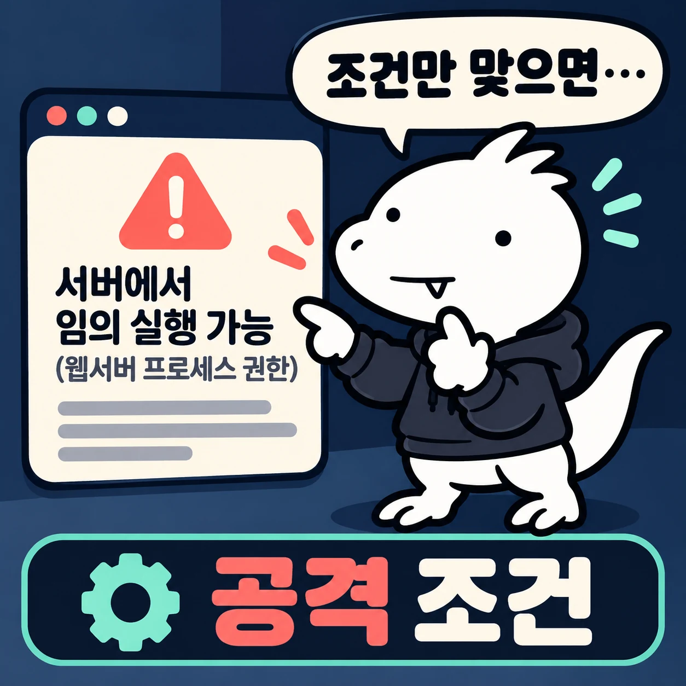

워드프레스는 최신인데, PHP는 확인했나요?
2026년 10월 21일 공개된 PHP 취약점 2개를 택배 창고 비유로 이해하고, 내 사이트에서 확인할 것과 AI에게 맡길 것을 나눈다.

15분 뒤, 내 사이트에서 할 일 세 가지가 남는다
확인할 곳 1군데
워드프레스 도구 → 사이트 건강 → 정보 → 서버의 PHP 버전
호스팅에 물을 질문 1개
두 CVE 수정이 실행 중인 PHP 작업자까지 적용됐나요?
AI 점검 프롬프트 1개
조사는 맡기고, 패치·판정은 내가 하는 읽기 전용 점검
서버 로그에 OOM이 찍혔다. 해킹당한 걸까?

출처 있음PHP 공식 권고문 GHSA-w8hw-w9fx-j79w, GHSA-6wmf-4rv5-p3rp (2026-10-23 확인)
PHP는 창고 직원, 메모리는 작업 책상이다
HTTP 요청 = 택배 송장
송장이 작아도 항목마다 상자·분류표·위치 기록이 생길 수 있다. 받은 바이트 수와 PHP 내부 메모리 사용량은 다르다.

PHP = 창고 직원
요청을 읽고 데이터를 조회해 결과를 만든다. 로그인·이미지 업로드도 이 직원의 일이다.
메모리 = 작업 책상
처리 중에 자료를 펼쳐 놓는 자리. 일을 마치면 정리하고 다음 요청을 받는다.
워드프레스 ≠ PHP: 워드프레스는 직원에게 일을 시키는 앱이다. 워드프레스 업데이트와 PHP 업데이트는 따로 확인한다.
위험한 건 책상 부족이 아니라, 부족해진 뒤의 정리다
CVE-2026-109618
메모리 부족으로 실행 흐름을 빠져나갈 때, 덜 준비된 내부 상태를 정리 코드가 정상 데이터처럼 다룰 수 있었다.
CVE-2026-109619
반납한 메모리의 상태가 남아 같은 작업자의 다음 요청에서 다시 쓰일 수 있었다(해제 후 사용). 책상은 반납했는데 수첩에는 아직 내 자리로 적혀 있는 셈.
| 구분 | 확인할 결과 | 창고 비유 |
|---|---|---|
| DoS | 서비스 이용이 방해되거나 멈췄나 | 접수·작업이 멈춤 |
| RCE | 공격자가 의도한 코드가 실행됐나 | 직원이 업무 밖 지시를 실행 |

출처 있음PHP 공식 권고문 2건. RCE는 추가 조건이 맞아야 하는 조건부 결과이며, 실행 권한은 PHP 웹 작업자 권한이다(root 아님).
해결은 PHP 패치, 확인은 실행 중인 작업자까지
| 사용 중인 계열 | 수정 포함 릴리스 |
|---|---|
| 8.5 | 8.5.12 |
| 8.4 | 8.4.27 |
| 8.3 | 8.3.36 |
| 8.2 | 8.2.35 (보안 지원 2026-12-31 종료) |
7·5 계열은 목록에 없다
“목록에 없으니 안전”도, “옛날 버전이니 무조건 뚫린다”도 아니다. 공식 지원이 끝난 것이다. 공급사 패치·연장 지원 근거를 확인하고 노출 축소·격리·이전을 준비한다.
백포트
업체가 기존 버전에 보안 수정만 넣었다면 버전 숫자는 그대로일 수 있다. 7.4·8.0·8.1용 최소 소스 백포트도 예외적으로 나왔지만, 내 서버에 자동 설치됐다는 뜻은 아니다.
출처 있음php.net 보안 공지·지원 일정·지원 종료 목록 (2026-10-23 확인)
내 사이트는 세 칸 중 어디까지 확인됐나?
AI가 낸 가장 쓸모 있는 답은 “PHP 버전 미확인”이었다
확인된 것
두 사이트의 WordPress 7.1.3이 당시 공식 최신값과 일치. 비교 가능한 플러그인 최신. HTTPS 인증서 정상. 점검한 민감 경로 접근 차단.
확인 못 한 것
PHP 버전. 공개 응답에도, 사용한 인증 API에도 없었다. 상용 플러그인 최신 여부, 모든 취약점, 서버 파일 무결성도 검사 범위 밖.
출처 있음2026-10-22 WordPress 보안 점검 보고서 (AI 에이전트가 실행한 URL·API 조회)
AI에게 조사는 맡기고, 판정은 내가 한다
AI에게 맡길 것
실제 요청을 처리하는 PHP 버전 찾기 · 두 CVE 수정·백포트 근거 대조 · 지원 종료와 이번 CVE 영향 분리 · 확인한 사실과 미확인 나누기 · 구버전 격리·이전 계획 초안
내가 할 것
점검 대상과 접근 범위 정하기 · 호스팅에 패치 적용 문의 · 백업 확인 후 패치 승인 · 정상 동작 확인 · 침해 징후가 있으면 호스팅 지원팀과 조사
내가 관리하는 워드프레스의 PHP2Shell 대응 상태를 읽기 전용으로 점검해 줘.
실제 웹 요청을 처리하는 PHP 버전과 두 CVE의 수정·백포트 근거를 확인하고,
지원 종료 여부와 이번 CVE의 영향 여부를 분리해 확인해. 확인한 사실과 미확인을 나눠.
CLI 버전이나 HTTPS 성공만으로 안전하다고 판단하지 마.
악용 재현, 부하 유발, 설정 변경, 재시작, 패치는 실행하지 마.
원문 프롬프트 7줄 중 5줄 발췌. 전체는 블로그 본문 「AI에게 맡길 건 조사부터」 섹션. 조사 요청일 뿐, 서버를 고치거나 안전을 보증하지 않는다.
공식 자료는 있고, 내 서버 패치는 아직 미확인이다
근거 수준: 직접 확인이번에 직접 잰 것 출처 있음문서·기사·과거 기록 미검증출처도 확인도 없는 것
워드프레스 업데이트 표시만 보지 말고, 실행 중인 PHP까지 본다
OOM ≠ 해킹
위험한 건 메모리 부족 뒤의 잘못된 정리다. RCE는 조건부다.
설치 ≠ 적용
패키지 설치 후 실행 중인 PHP 작업자 반영까지 확인한다.
오늘 할 일
사이트 건강에서 PHP 버전을 보고, 호스팅에 두 CVE 적용 여부를 묻는다.
개념 설명과 점검 순서 안내용 자료입니다. 공격·패치 도구가 아니며 어떤 서버의 안전도 보증하지 않습니다. 벨로키 그림은 AI로 만든 개념 설명용 이미지입니다. 기준일 2026-10-23 · CC BY-NC-ND 4.0 · 택택(TECHTAEK)